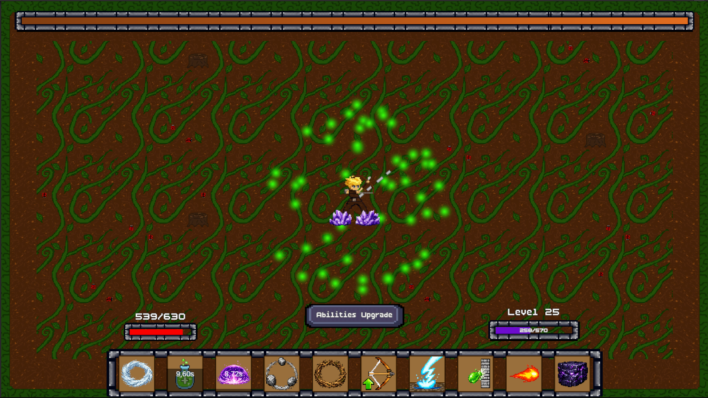

01
Spherebound
2D action roguelite с видом сверху · UnityИгрок, оставаясь неподвижным, переживает всё более сложные волны врагов с помощью заклинаний, случайных улучшений и комбинаций стихий. Новые локации и противники требуют постоянно адаптировать билд и стиль игры.
Мой вклад · Unity/C# Developer · Project Lead
Интегрировал игровой контент, UI, анимации, префабы заклинаний и визуальные эффекты, настраивал сцены и переходы. Как Project Lead собрал и координировал команду из пяти человек, распределял задачи, отслеживал прогресс и организовывал рабочий процесс.
Unity
Gameplay Integration
UI
Project Lead